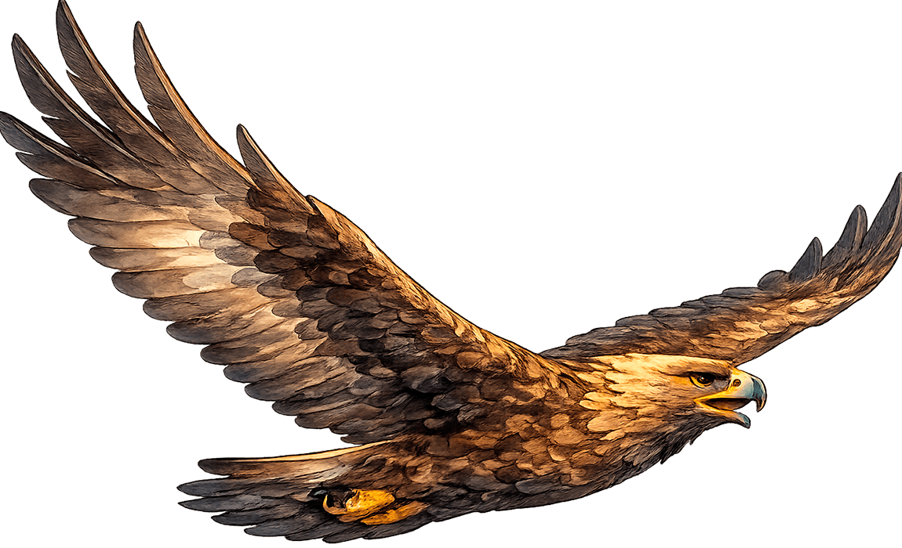
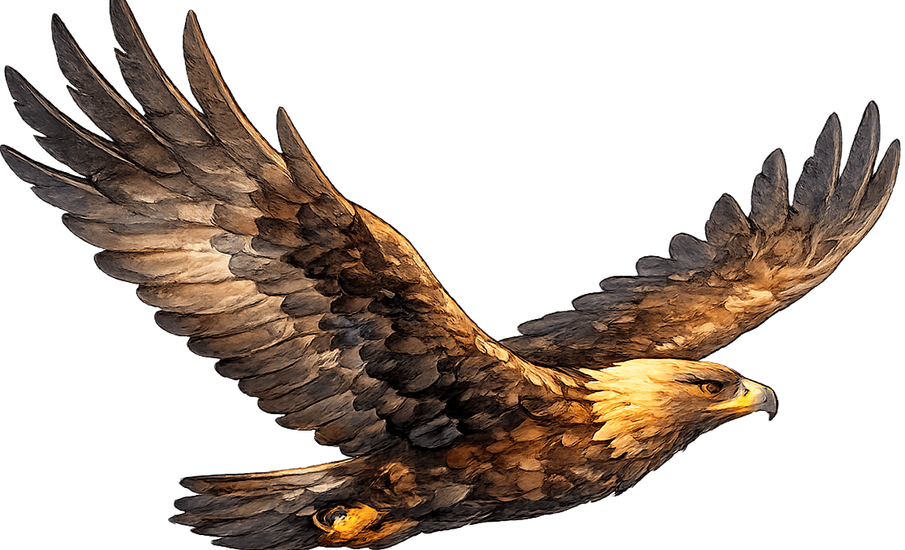

Игра народов Северного Кавказа
Полёт горного орла
Проведи орла через горные ущелья Кавказа. Нажимай пробел, стрелку вверх, кликай или тапай по полю, чтобы взмахнуть крыльями.

Управление: пробел, стрелка вверх, клик или тап по игровому полю.
Результат
Полёт завершён
Попробуй ещё раз и проведи орла дальше.
Орёл у многих народов Кавказа считается символом силы, свободы и смелости.
Как играть
Помоги горному орлу пролететь через узкое ущелье Северного Кавказа! Управляй полётом, обходи скалы и продержись до конца маршрута.
- Нажми «Начать игру».
- Чтобы взмахнуть крыльями, нажимай Пробел, ↑, кликай мышью по игровому полю или касайся экрана на телефоне.
- Каждый взмах поднимает орла вверх, затем он начинает плавно снижаться.
- Пролетай между верхними и нижними скалами, не касаясь их.
- Если орёл столкнётся со скалой — игра закончится.
- Продержись в воздухе до окончания времени, чтобы успешно завершить полёт.
Лети внимательно, рассчитывай каждый взмах крыльев и проведи орла через всё ущелье!
Как играть
Помоги рыбаку Дальнего Востока поймать рыбу, которая выпадает из сачков сверху.
- Нажми «Начать игру».
- Передвигай рыбака влево и вправо стрелками ← → или клавишами A/D.
- На телефоне используй кнопки управления снизу.
- Смотри на сачки сверху: когда в сачке появляется рыба, она скоро упадёт вниз.
- Подставляй корзину под падающую рыбу, чтобы поймать её.
- Если несколько рыб упадут мимо — игра закончится.
- Поймай нужное количество рыбы до окончания времени.
Следи за сачками и быстро меняй позицию рыбака, чтобы собрать большой улов!